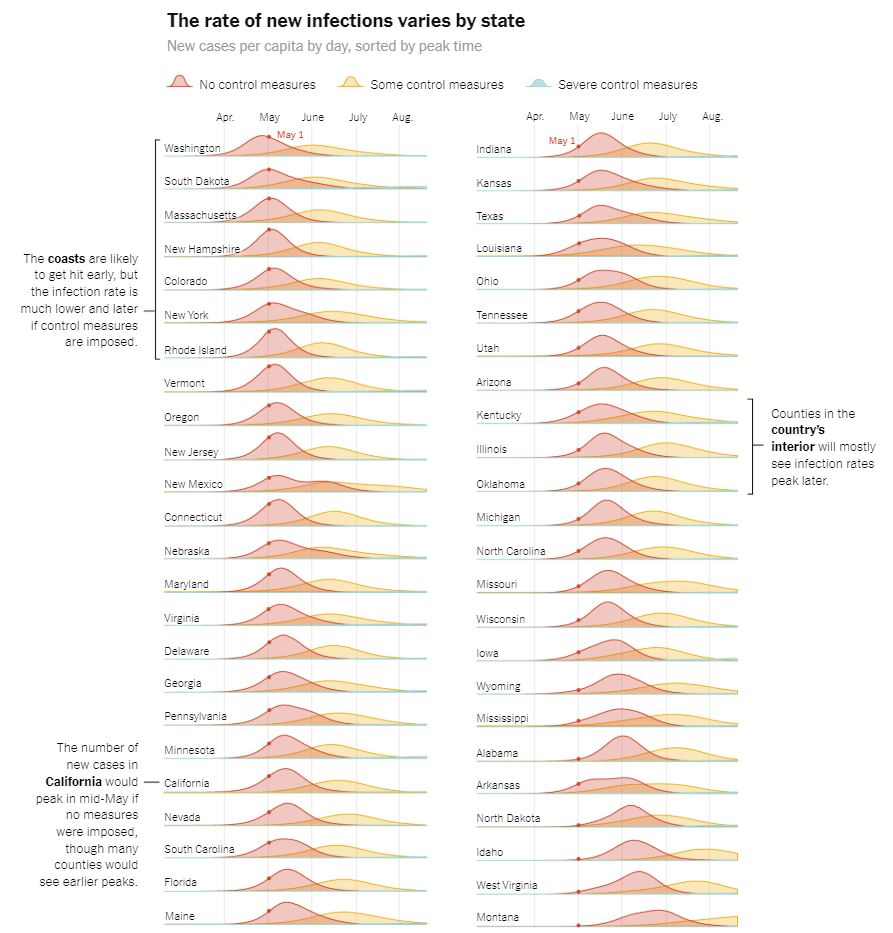

On this map, you can see the current number of identified cases of COVID-19 within the United States. Also shown on this map is the population density of each state as well as the location of major cities within the United States. As you observe this map, you can see that most cities in the U.S. are congregated along the coasts. This is also seen as coastal states have higher population densities. This is important because this has impacted the spread of COVID-19 within the United States. Coastal cities and states are more dense than the central states and therefore they have seen a much more rapid spread.

This image, which was featured in the New York Times, demonstrates how the inner states are likely the see the spread of COVID-19 later than the coastal states and cities. While coastal cities and states are already seeing exponential growth in their number of cases, inner states are only just now seeing more frequent cases. This is due to their lower density, which can be seen on the map, and the fact that they do not have as many major metropolitan cities as the coastal states.
Sources for this webpage include: the CDC, the New York Times, the U.S. Census Bureau